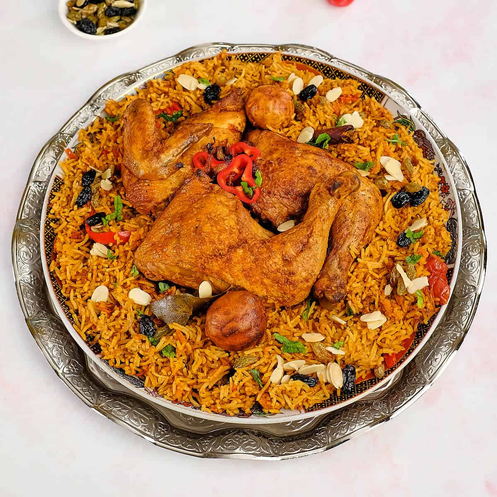

Kabsa Recipe

National Saudi Rice and Chicken Dish
Ingredients:
- 1 whole chicken, cut into pieces
- 2 cups basmati rice, rinsed and soaked for 30 minutes
- 1 large onion, finely chopped
- 4 cloves garlic, minced
- 2 medium tomatoes, finely chopped
- 1/4 cup tomato paste
- 3-4 whole cardamom pods
- 3-4 whole cloves
- 1 cinnamon stick
- 2 dried bay leaves
- 1 teaspoon ground turmeric
- 1 teaspoon ground cumin
- 1 teaspoon ground coriander
- 1 teaspoon paprika
- 1/2 teaspoon ground black pepper
- Salt, to taste
- 4 cups chicken broth or water
- Olive oil or vegetable oil for cooking
- Toasted almonds and raisins, for garnish (optional)
Directions:
- In a large pot, heat oil over medium heat. Add onion and cook until softened, then add garlic and cook for another minute.
- Add chicken pieces and brown on all sides. Stir in tomatoes and tomato paste, cooking for 3-5 minutes until softened.
- Add cardamom, cloves, cinnamon stick, bay leaves, turmeric, cumin, coriander, paprika, black pepper, and salt. Stir well to coat the chicken in spices.
- Pour in chicken broth or water, bring to a boil, then reduce heat and cover. Let simmer for 20-30 minutes until the chicken is cooked through.
- Remove the chicken and set aside. Add soaked rice to the pot, covering and cooking over low heat for 15-20 minutes or until rice is tender and liquid is absorbed.
- Place chicken back on top of the rice, cover, and cook for another 5-10 minutes to heat through.
- Garnish with toasted almonds and raisins if desired. Serve hot and enjoy!